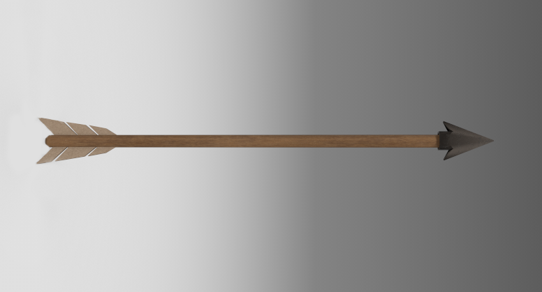
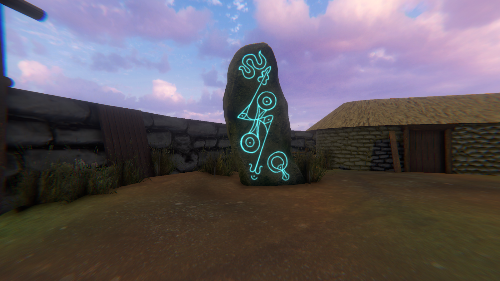
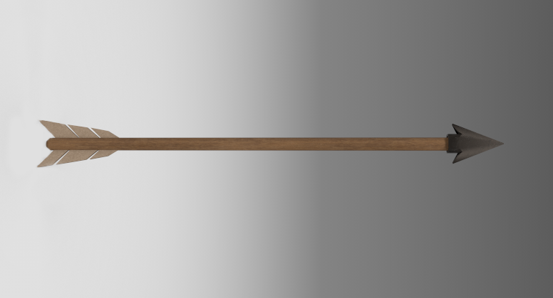
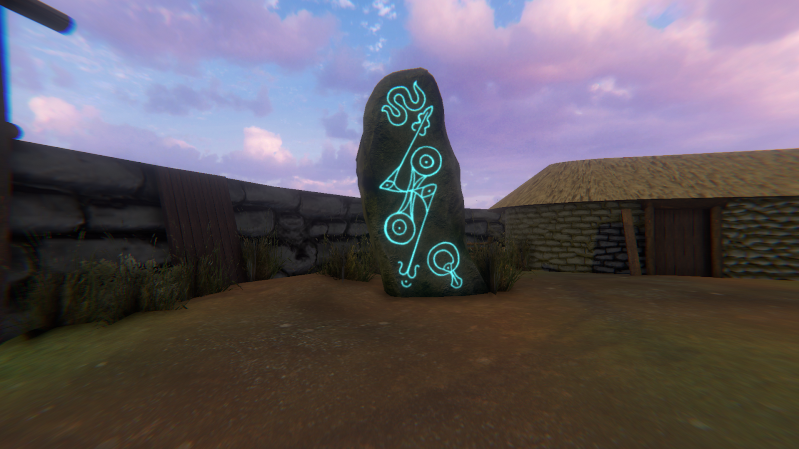
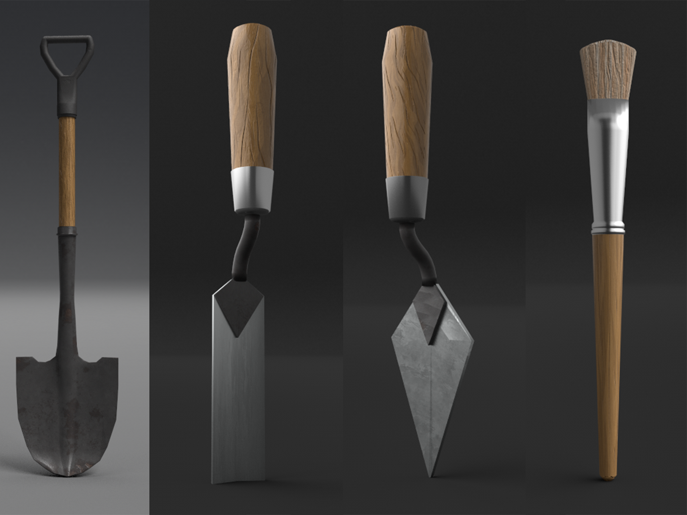
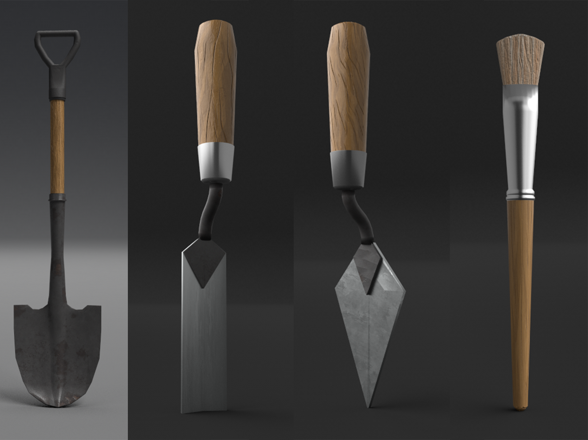

Uncovered is a first person educational game about the process of archaeology focusing on exploration and excavation.
The game was made by a team for the Society of Antiquaries of Scotland, and as such centers on the late Iron Age Scottish heritage.
These models are some of the artifacts you can find at the dig site, as well as the tools the player can use during gameplay.
The player can travel between the present time back to the past to explore the recreation site, therefore two versions of each artifact exist to represent the different time periods.
Software used:
Date: 2020


 



 
